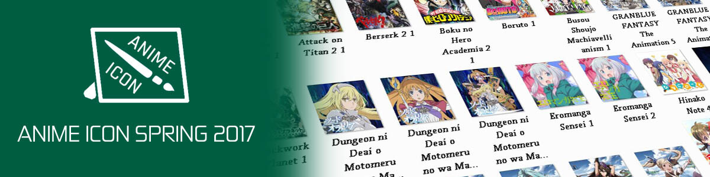

Hi and Good afternoon guys long time no see. A past few days I release some new version of my LINE Theme *I don't know why I make these things*. Anyway for this update I change the color theme to .. Read More →
Hello guys, welcome to my site, today I release my fifth LINE Theme, I hope next I can make more LINE Theme and of course LINE Sticker, but first I need to finish my real life problem, after that I .. Read More →
Hello guys, today is Wednesday, June 21 year 2017, and today I'm releasing my new Theme, well, I just change some part and the color, because, maybe.. some of you don't like blue color so I create the theme with .. Read More →
Hello again guys, what a nice day. Wait, not nice for me, still busy taking care of my real life. well, forget it. Today, I post Anime Icon for this season, spring 2017. Sorry I'm late posting this because I'm... Read More →

Hello guys, welcome to my site. right now, this the eight post I've created for this site. Did you notice there's something different in this site? well, if you don't notice it, my domain name is changed from yusatsunao.github.io to... Read More →

Hellooo guyss, today I'm releasing my third LINE Theme. It's all about race, beat all opponent, win the race and go around the world. This is a simple theme, so people can use this theme. If you like racing theme... Read More →

Hello guys, welcome to my official site. Right now I post an Anime Icon for this season, winter 2017. Actually it's not winter in here, it's rain season. ahh well forget it. This time I make Anime Icon for windows... Read More →

Hello guys, welcome to my official site. Happy New Year to you all, right now I post my second LINE Theme, well it takes a long time to release because the reviewer take a vacation. Maybe I should take a... Read More →
Hello again guys, welcome to my site. Today, I post something well, just what I said a few days ago on the last post. Right now, I will share an Anime Rainmeter. The main theme is Gi(a)rlish Number. This anime... Read More →

This is the third post of this site. Well, I have a lot of things to do right now so I'm a bit busy. But of course, I'll not leave this site, I will post something on here. Not tomorrow... Read More →
Hello guys, Now my first LINE Theme is now released, do you like military things and other stuff like that, and you want your LINE become like stronger you must use this LINE Theme, you can buy & Download it ... Read More →

Welcome, welcome guys to my official site. Thank you to you all for visiting my site here. In here you can get many things like a skins, icons, themes and etc. well, that is still in plan but, I will ... Read More →